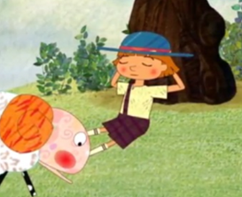

양치기 소년 의 등장 캐릭터
|  | 양치기 소년 |
|
목장에서 양을 지키고 있는 양치기 소년. 늘상 양을 지키기에 지루해하며 늑대가 있다는 소문에 늑대가 나타났다고 거짓말을 함 재미를 위해 거짓말을 일삼아오다 실질적인 늑대의 위험에선 아무의 도움도 받지 못하는 처지가 됨. |
|
늑대 |
|
|
양치기 소년이 한 거짓말로 인해 거짓말은 나쁘다는 교훈을 주는 늑대 늘상 거짓말이였지만 실제로 나타나 양들을 공격하며 양치기 소년이 자신이 늘상 거짓말을 밥 먹듯이 했다는 큰 잘못을 했음을 깨닫게 하는 캐릭터 |
|
마을 주민들 |
|
|
마을에 있는 선량한 마을 주민들 양치기 소년의 도움 요청에 진실인줄 알고 달려가 도움을 주려 하지만 거짓말인것을 알고 화를 내며 돌아감 늘상 양치기 소년의 거짓말에 속아와 진짜 늑대의 습격에는 도와주지 않음. |
Copyright ⓒ 2022, All Right Reserved by
 컴퓨터소프트웨어공학과 20223517 방제영
컴퓨터소프트웨어공학과 20223517 방제영
컴퓨터소프트웨어공학과 20223517 방제영